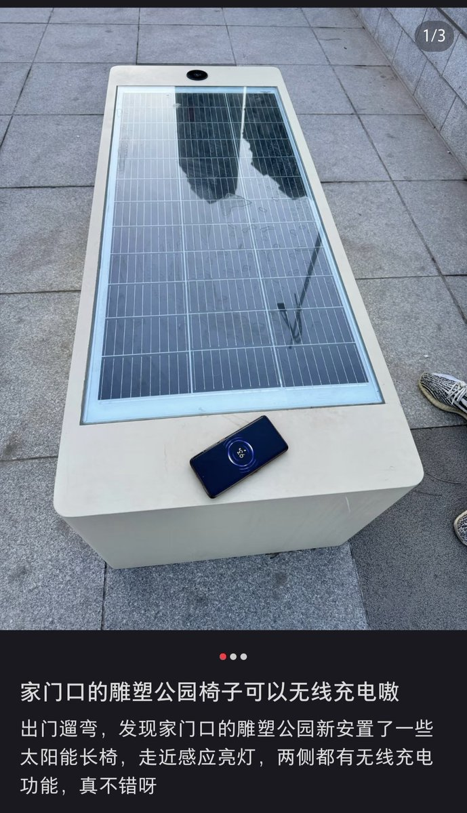
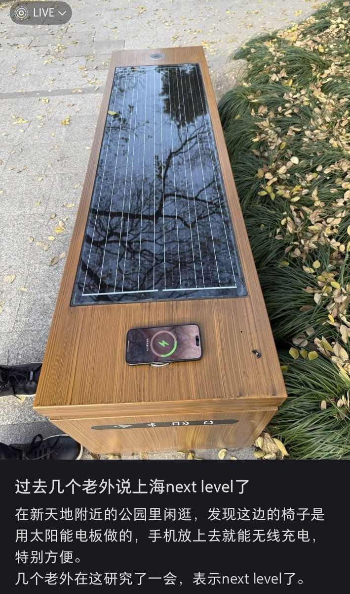
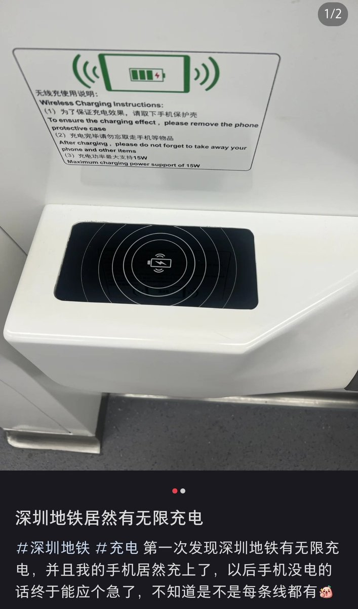
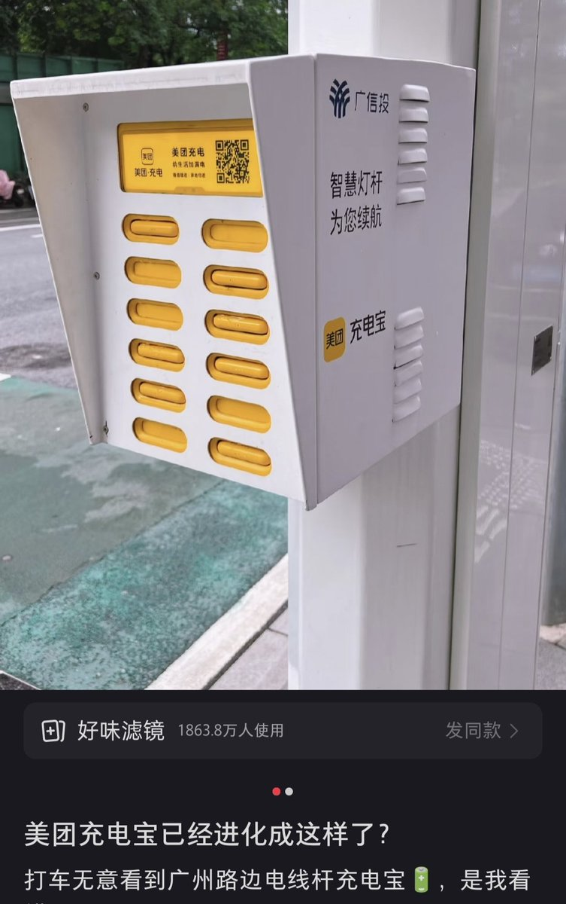

有地方能公共使用不代表所以地方都能未經授權使用，如果有可以使用的標誌那當然可以；沒有使用的標誌而且沒有獲得授權，那在普通法地區就是犯罪
1968 c. 60 s. 13 U.K.：
A person who dishonestly uses without due authority, or dishonestly causes to be wasted or diverted, any electricity shall on conviction on indictment be liable to imprisonment for a term not exceeding five years.

1968 c. 60 s. 13 U.K.：
A person who dishonestly uses without due authority, or dishonestly causes to be wasted or diverted, any electricity shall on conviction on indictment be liable to imprisonment for a term not exceeding five years.




这位是日本低级黑吧？
中国户外公园/地铁一些有免费无线充电，民众随时随便用；
充电宝大面积复盖大小商场等等其他公共场所，随借随还。
日本一个发达国家，居然连这种基础的便民设施都没有的吗？ https://t.co/mssHV53zE7 https://t.co/YmHKlQumSC
中国户外公园/地铁一些有免费无线充电，民众随时随便用；
充电宝大面积复盖大小商场等等其他公共场所，随借随还。
日本一个发达国家，居然连这种基础的便民设施都没有的吗？ https://t.co/mssHV53zE7 https://t.co/YmHKlQumSC